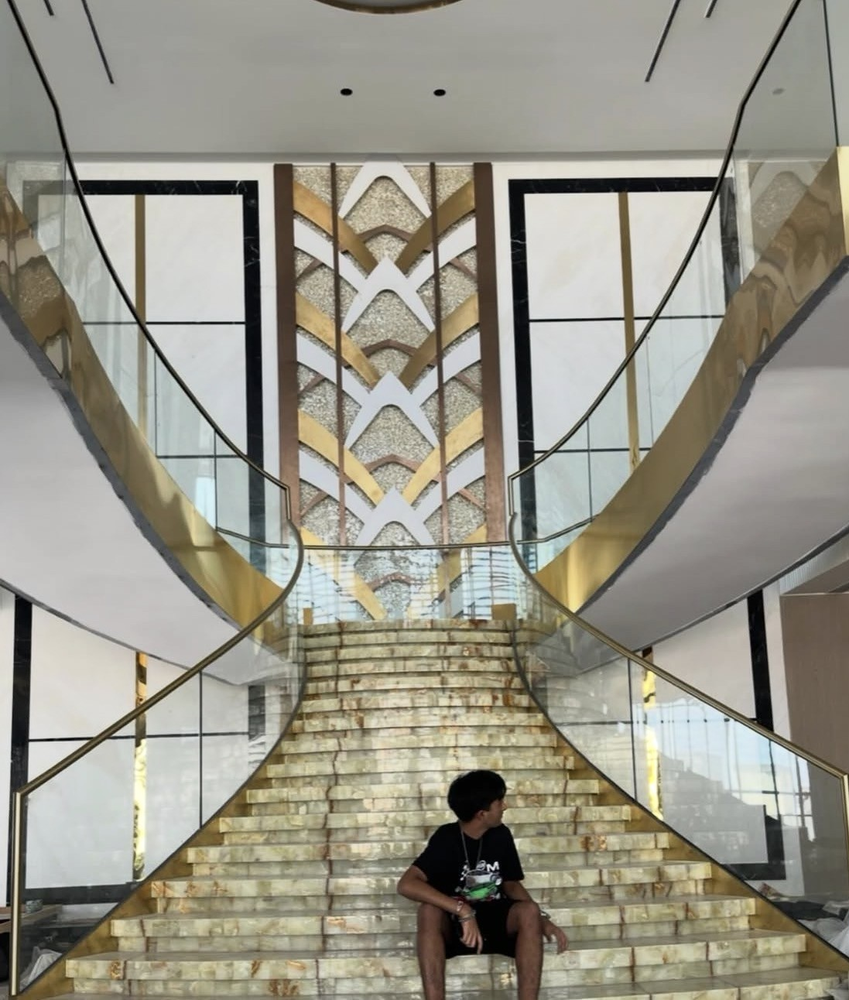
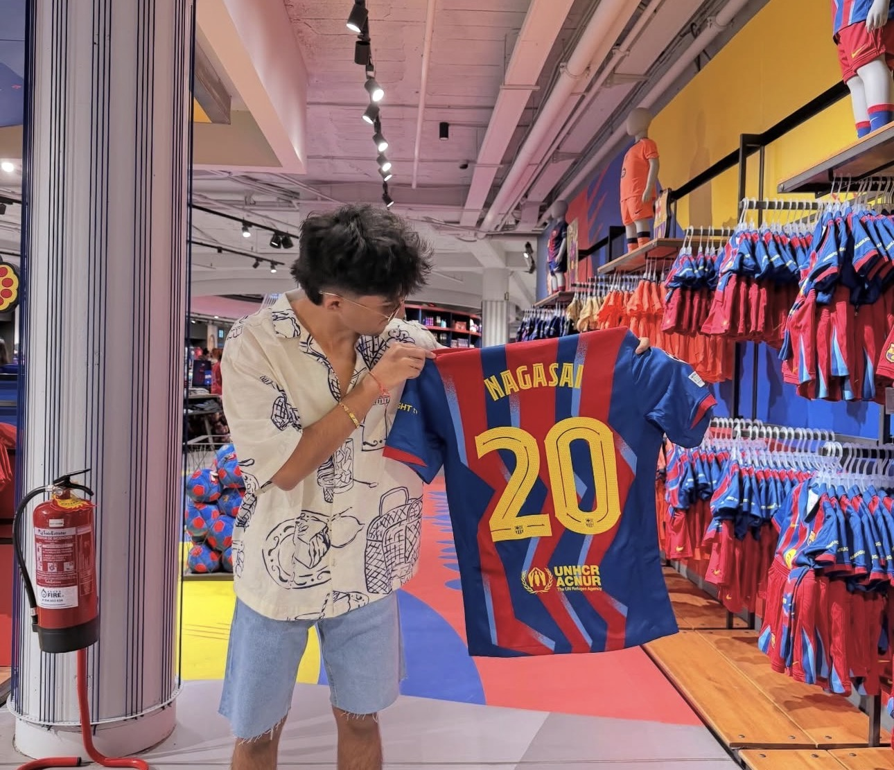
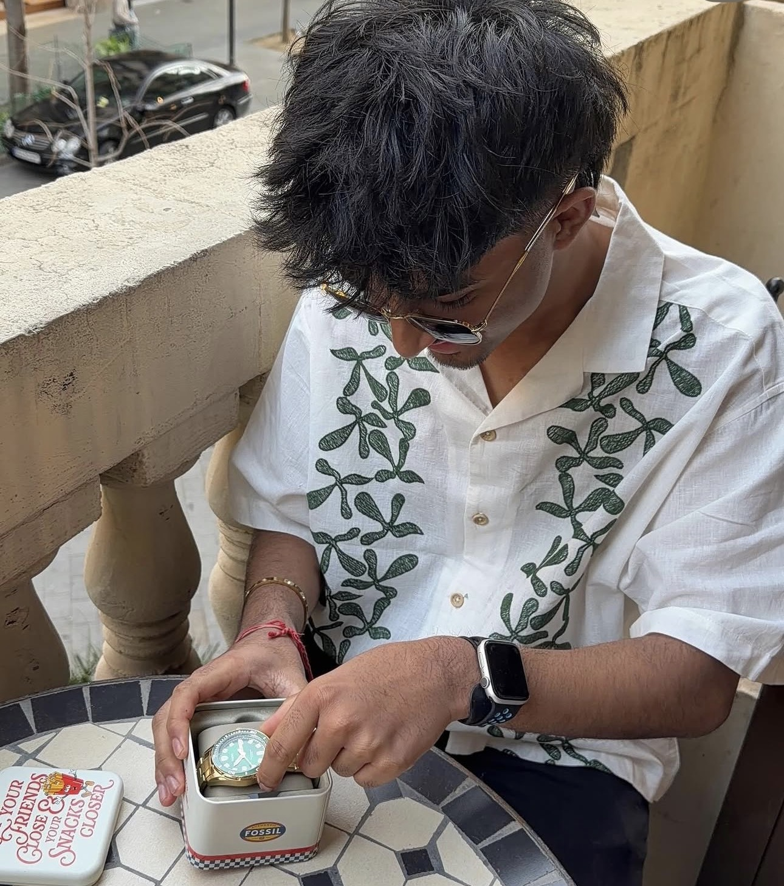
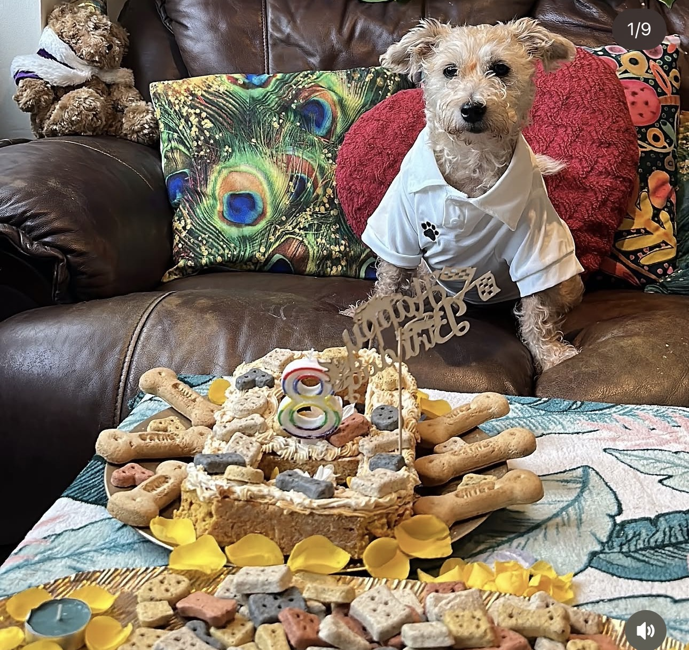

Hi, I’m Nagasai. I make useful things work better.
I’m studying software design at TUS and learning by building real things with real teams. I like figuring out how things work, testing what I make, and making the next version a little better. Away from my laptop: football, badminton, cars, and finding good food while travelling.
From AI-assisted support to resilient end-to-end tests, I’m interested in engineering that saves time without asking people to trust a black box.
SELECTED WORK 01 / 04
Engineering with people in the loop.
A closer look at the work I contributed to during my industry placements. The diagrams below are original, simplified illustrations—not screenshots or internal artifacts.
SUPPORT FLOW01 — HPE
JJira commentQuestion or bug report
↓
PyPython webhookContext-aware response
↓
✓Response + triage
01 / AI-ASSISTED SUPPORT · HPE
A faster first response for engineering teams.
During my Software AI Engineer internship, I developed a Jira assistant using Python webhooks to respond to comments and help triage bugs. The goal was practical: give teams a useful response where the conversation already happens.
Python
Webhooks
Jira
AI-assisted support
What I learned An assistant is most useful when it supports a clear workflow—not when it obscures who is responsible for the next action.
I designed a self-healing test flow: when a locator fails, the framework attempts a dynamic fix, reruns the test, and opens a pull request only after successful recovery. I also automated cluster end-to-end runs, investigated flaky tests, flagged critical defects, and used LLMs for debugging insights.
Jenkins
Test automation
Cluster E2E
Flaky-test investigation
My takeaway Verify automation before relying on it. A suggested repair is not a successful repair until a rerun confirms it.
AI WORKFLOW TOOLCHAIN03 — ERICSSON
AI workflowLangChainLangflowLangfuseLangGraph
IntegrateImproveCollaborate
03 / AI WORKFLOW INTEGRATION · ERICSSON
Learn the system. Improve the pieces.
As a Software Engineer Intern, I helped integrate AI workflows using LangChain, Langflow, Langfuse, and LangGraph. I resolved bugs, rewrote and optimised code, and strengthened my Python skills while working in a hybrid team.
Python
LangChain
Langflow
Langfuse
LangGraph
Beyond the code Daily stand-ups helped me share progress, ask focused questions, and contribute reliably. I also mentored sixth-year students as they learned software engineering principles.
PROJECT ARCHIVE 02 / 04
Ideas made into working things.
A broader selection of my AI, software, mobile, and web projects—from industry work to university teams and independent builds.
Designed and validated an AI-powered approach to detect and resolve broken UI test locators. Integrated with GitHub Actions and HPE automation libraries, tested on the Morpheus platform, and explored Copilot-assisted self-healing to improve test reliability.
Python
GitHub Actions
UI test automation
Self-healing
INDUSTRY · HPE
Jira AI Assistant
Developed an AI assistant for Jira defect triage and comment drafting. Connected Jira and Confluence context with TestRail, Jenkins, ELK, S3, RAG, SQLite, Redis, and Microsoft Teams approval workflows to support evidence-based responses.
Python
Jira
RAG
SQLite
Redis
INDUSTRY · HPE
Jenkins Log Analyzer
Built an intelligent platform to analyse Jenkins pipeline logs, identify likely root causes, and recommend solutions. Refactored the backend, improved the frontend, added chatbot functionality, integrated Prometheus monitoring, and introduced parallel tool execution.
Jenkins
LLMs
Prometheus
Parallel execution
TEAM PROJECT · TUS
Inventory Management System
Worked on an inventory management system using an Agile development cycle. The team used Jira for sprint planning, GitHub for version control and reviews, Jenkins for continuous integration, and SonarQube for code-quality checks.
Java
JUnit
Jira
Jenkins
SonarQube
Collaborative university project.
NASA SPACE APPS · TUS
BioCosmos
Created during the 2025 NASA Space Apps Challenge: a space-biology knowledge engine for discovering research and asking questions in natural language. The platform connected more than 600 NASA biology publications; I developed the Next.js frontend and Flask backend and integrated Gemini API querying.
Next.js
Flask
Gemini API
NASA open data
Collaborative challenge project · completed in 48 hours.
STUDENT PROJECT · TUS
Cricket Management System
Developed a Python system for organising cricket teams, players, matches, and tournaments, including registration, scheduling, score tracking, and tournament progress.
Python
Data management
Application design
AI APPLICATION · ERICSSON
AI Agent Chatbot
Built a Python web application exploring LLM agents and API integration. Connected Tavily and Groq for dynamic information retrieval and designed a responsive interface for context-aware interactions.
Python
LLMs
Tavily API
Groq
MOBILE · TUS
Car Maintenance App
Developed an Android app for vehicle upkeep, with maintenance reminders, driving-behaviour analysis, GPS speed estimates, fuel-efficiency tracking, trip summaries, charts, and CSV log export.
Android Studio
Mobile development
GPS
Data visualisation
WEB · TUS
API Web Application
Created an API-powered web application demonstrating real-time data fetching, interactive content, responsive layouts, and a Node.js/Express backend.
HTML
CSS
JavaScript
Node.js
Express
DESKTOP APP · TUS
Cricket Scoreboard App
Built a Python desktop scoreboard for entering team names, updating live scores, and resetting a match, with an interactive PyQt interface.
Python
PyQt5
Desktop UI
PERSONAL BUILD · TUS
Python Travel App
Designed a travel companion app concept for trip planning, itinerary organisation, expense tracking, nearby-place discovery, weather, basic phrase translation, and packing checklists.
Python
GUI
Travel planning
DESKTOP APP · TUS
Finance Calculator
Developed an interactive calculator for interest, loan repayments, and savings growth, with inputs for financial values and calculated results.
Java
HTML
Financial calculations
TEAM MOBILE GAME · TUS
Running Game · MIT App Inventor
Collaborated in a three-person team. Contributed visual design, character and background artwork, colour choices, block coding, start/run controls, sound effects, and character movement.
MIT App Inventor
Mobile applications
Visual design
WEB · TUS
Responsive Portfolio Website
Designed a responsive portfolio website using HTML, CSS, and JavaScript, with a Java backend and database integration, tested on a local server.
HTML
CSS
JavaScript
Java
WEB APP · TUS
BMI Calculator
Created a responsive BMI calculator that accepts height and weight, validates inputs, calculates BMI, and presents category feedback.
HTML
CSS
JavaScript
Input validation
Project descriptions are based on the details provided for my LinkedIn project entries. Team contributions are described as collaborative work; no repositories or outcomes are claimed unless stated.
EXPERIENCE & EDUCATION 03 / 04
How I got here.
An ongoing part-time quality assurance role alongside internship experience, degree study, and collaborative engineering work.
JAN 2024 — PRESENT
NSTEP · PART-TIME
Student Quality Assurance
Part-time quality assurance work alongside my degree studies.
Ongoing role
JAN — AUG 2026
HPE · INTERNSHIP
Software AI Engineer Intern
Worked across AI-assisted support and test reliability: Jira automation, Jenkins log analysis, resilient tests, cluster end-to-end runs, and defect investigation.
Focus: useful automation, verified outcomes
MAY — SEPT 2025
ERICSSON · INTERNSHIP
Software Engineer Intern
Helped integrate AI workflows, resolved bugs, optimised code, collaborated in a hybrid team, and mentored sixth-year students in software engineering principles.
Honours degree studies in Software Design AI & Cloud Computing
Building practical foundations in software development, Python, Java, web development, AI workflows, and cloud computing.
Technological University of the Shannon
A LITTLE MORE ABOUT ME 04 / 04
Good engineering is a team sport.
I’m at my best when I can keep learning, work openly with others, and turn feedback into a better next iteration.
01
Football
Shared goals, quick decisions, and coordinating with a team.
↗
02
Badminton
Focus and adaptability—one point, and one adjustment, at a time.
↗
03
Car modification
A personal interest in design choices, compatibility, and how engineering decisions affect a result. A hobby, not professional mechanic experience.
↗

Personal snapshot · not a workplace imageAt the seaside · personal snapshot

Football culture

A day out
OFF THE CLOCK · EXPLORING EUROPE
New places, new plates.
I love travelling around Europe and have visited several countries. I enjoy discovering the local food and culture—and experiencing the nightlife along the way.

Cooper · birthday celebrations
MEET MY DOG
Cooper, my sidekick.
Cooper is nine years old and a Yorkshire Terrier–Jack Russell cross. He loves car rides and playing fetch. Cats, on the other hand, are not his favourites.
Car ridesFetchNot cats
What I’m bringing to the team
BUILD
Python · Java · Web development · AI workflows
IMPROVE
Test automation · Bug investigation · Code optimisation · Verification